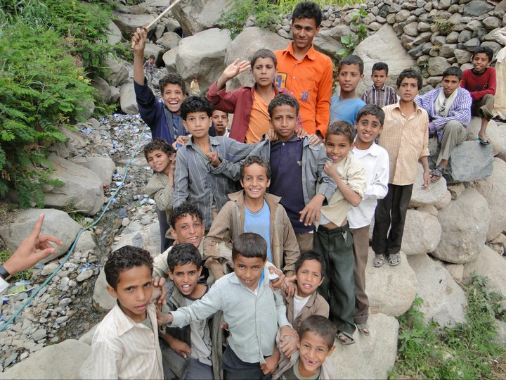
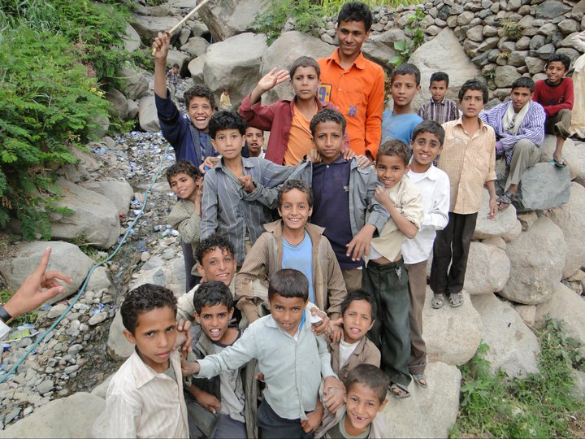

This is the nearest thing to a bus. No timetables, no fixed stops and a consistent route only if you're lucky. Stand on the pavement and flag one down. They're recognisable by way of being vans with the sliding door taken off and some seats bolted down to the inside.
Qat
A plant that is placed inside the cheek and chewed over several hours. Usually consumed in the early afternoon, when you can expect to have to step over men in a soporific state while chewing their qat. Also a useful word in scrabble.
 
